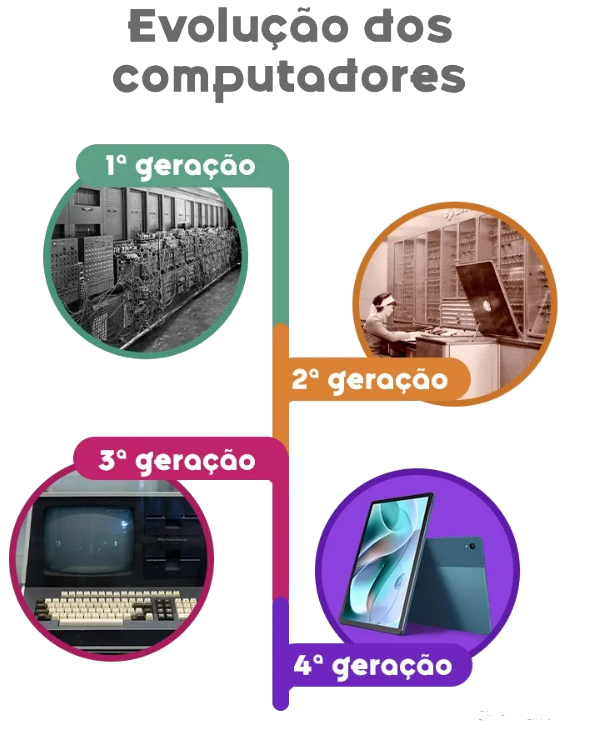
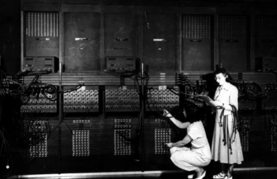
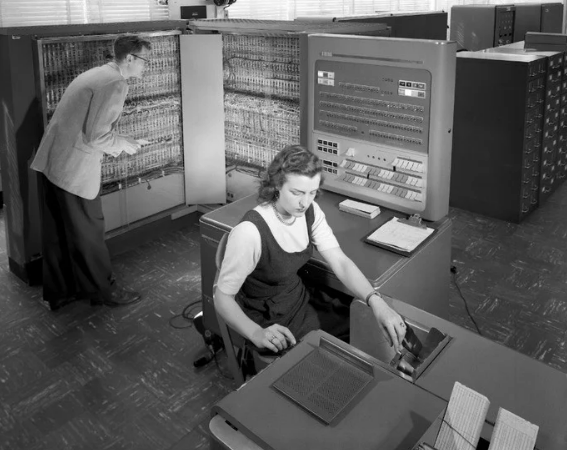

Evolução dos computadores: gerações da história da informática
A evolução dos computadores é um processo que teve início no século XVII, com o surgimento da primeira calculadora, e dura até os dias de hoje. Estando sempre em atualização.
A história dos computadores costuma ser dividida em quatro gerações. Abordando a criação das primeiras calculadoras mecânicas até o uso em massa dos computadores pessoais, comuns na atualidade.

legenda da minha imagem
Evolução dos computadores
Apesar da popularidade e importância dos computadores pessoais, os primeiros computadores tinham um propósito diferente: suprir a necessidade de realizar contas complexas em menos tempo. Eram grandes máquinas de calcular.
O avanço da tecnologia e a descoberta de materiais melhores e menores como componentes, fez com que os computadores assumissem outras funções, como os chamados sistemas embarcados, que são computadores com uma função específica. Câmeras fotográficas ou Smart TVs são considerados sistemas embarcados.
Ou sistemas críticos, que são computadores responsáveis pelo controle e aviso de situações de risco, são as máquinas presentes em aviões, espaçonaves ou usinas nucleares. Até chegar nos computadores pessoais atuais. Veja como foi a evolução.
Primeira geração

Programadoras trabalham no ENIAC, em 1946.
A primeira geração de computadores surgiu entre a década de 1940 e o final dos anos cinquenta, era composta por máquinas grandes e pesadas. Tratava-se de calculadoras gigantes que conseguiam realizar cálculos em cerca de 5 segundos.
Os computadores da primeira geração usavam válvulas eletrônicas, diferente das calculadoras anteriores que usavam elementos mecânicos ou eletromecânicos.
O computador mais famoso da primeira geração foi o ENIAC (Electrical Numerical Integrator and Calculator), de 1943. O ENIAC conseguia realizar em 30 segundos cálculos que antes demoravam 12 horas. Pesava 30 toneladas e foi criado para calcular trajetórias táticas durante a II Guerra Mundial, porém só ficou operacional após o fim da guerra.
Segunda geração

Programadores trabalham no IBM T04, em 1957.
A segunda geração de computadores abrangeu a tecnologia usada entre o final da década de 1950 até 1965. A segunda geração foi a responsável pelo uso dos transistores, em vez de válvulas eletrônicas. Foi a utilização dos transistores que fez com que os computadores diminuíssem de tamanho.
Os computadores dessa geração chegavam a ser 100x menores que os anteriores e consumiam menos energia. O IBM94, por exemplo, já pesava menos de 1 tonelada. Pertence à segunda geração, o primeiro computador comercial: IBM 608, de 1957.
Em 1960, surgiram os circuitos integrados, que combinavam em um único dispositivo centenas de transistores. Os transistores passaram a ser colocados dentro de pastilhas de silício, que têm boa condutividade e são seguras. Isso possibilitou que computadores menores e mais rápidos fossem construídos.